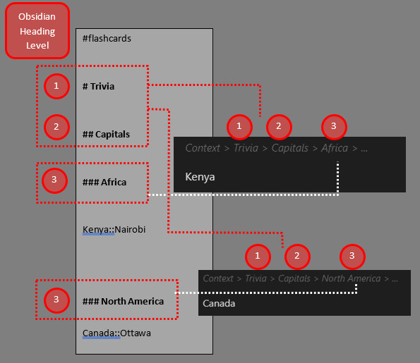

Timeline：保存阅读位置与历史进度¶

注：文档中的截图可能来自较早版本的界面，但核心布局与入口逻辑基本保持一致，供您在操作时作为视觉对照。
模块导读¶
渐进阅读的精髓在于将长篇材料打散到多个不同的时间点进行消化。Timeline（时间线）功能正是为此设计的上下文恢复工具。它不仅记录了您历史上每一次复习该笔记的时间，还能尽可能地帮您定位到上一次阅读结束时的滚动位置。
如果您经常需要在多篇厚重的教程或书籍摘录之间来回切换，并且厌倦了每次打开文档都要“重新寻找上次读到哪儿”，请参考本页内容。
Timeline 的核心作用¶
在没有 Timeline 的情况下，中断阅读往往意味着上下文的丢失。Timeline 通过记录“阅读进度（滚动百分比）”与“历史提交状态”，极大地降低了任务切换时的认知损耗。 通过这一机制，您可以放心地将一万字的长文拆分成十个 10 分钟的碎片进行阅读，系统会为您保管每一次停顿的锚点。
如何查看与使用 Timeline？¶
- 展开时间线抽屉：
- 在复习队列侧边栏中，选中并单击打开某篇已追踪的笔记。
- 在该笔记的条目下方（或通过相关快捷操作），通常会展开一个 Timeline 抽屉区域。
- 解读历史记录：
- 在抽屉中，您可以看到这篇笔记过去每一次的推进记录（Commit），包括当时的时间戳以及阅读到了该文档的什么位置（如 45%）。
- 恢复上下文位置：
- 单击 Timeline 中较早的一条记录，主编辑区将尝试自动滚动到当时阅读的近似位置。这让您能迅速找回当时的语境。
触发记录的机制¶
请注意，Timeline 并不是实时的高频日志，它通常在您对该笔记进行明确的复习动作时生成记录。
- 当您阅读完一部分内容，并通过命令或按钮对该笔记执行“推进（Review/Good/Hard 等）”或“延期”操作时，系统才会捕捉当前的滚动位置，并在 Timeline 中固化为一条新记录。
界面定制与设置¶
如果您觉得 Timeline 占用了过多的侧边栏空间，或者不需要记录滚动位置，可以前往插件设置页的 Notes 标签进行调整：
- 显示滚动百分比（Show scroll percentage）：开启或关闭进度数值的显示。
- 自动展开 Timeline（Auto-expand Timeline）：控制点击笔记时，时间线抽屉是否默认展开。
常见误区提示¶
- 期望 100% 的像素级精准定位：Timeline 的定位依赖于文档的结构与滚动比例。如果您在两次阅读之间，对该文档的原文结构进行了大规模的增删改写，旧记录对应的上下文位置可能会发生一定偏移，仅能作为近似参考。
- 清理数据的风险：Timeline 的历史记录依赖于底层的独立数据文件（如
review_commits.json等）。如果您在排障时随意删除了这些文件，该笔记的历史阅读上下文也将随之丢失。
相关章节导航：